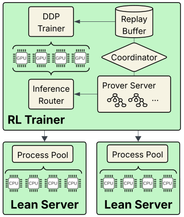

Trains an MCTS-based execution-guided prover that interacts with Lean 4, and releases LeanTree, a Mathlib proof-tree dataset and Lean interaction tool.
Abstract
We introduce NanoProof, to our knowledge the first factorized execution-guided theorem prover in Lean 4 whose training data, extraction tooling, training pipeline, and weights are all released, making it end-to-end reproducible using open-source resources. To this end, we build and release a dataset of structured proof trees, as well as a tool for programmatic interaction and data extraction within the Lean 4 formal verifier. To support sustainable research, we focus on compute efficiency to facilitate accessible training and evaluation. NanoProof achieves 50.8% pass@16 on MiniF2F-Test, exceeding the two closest systems of its class, HyperTree Proof Search and ABEL, at roughly 90x and 7x less compute, and using more than four orders of magnitude less compute than AlphaProof. Stronger open-weight provers exist, but they are fine-tuned from large pretrained language models and release neither training data nor pipeline; NanoProof shows that the factorized execution-guided class of provers can be rebuilt from scratch with modest resources.
Problem
Factorized execution-guided provers such as HyperTree Proof Search, ABEL and AlphaProof have not been reproducible, because their code, data and pipelines are closed. They are also very expensive to train.
Approach
NanoProof follows AlphaProof's AND-OR MCTS proof search. A 1B-parameter actor-critic network proposes Lean tactics and predicts proof depth, and tactics are executed in Lean during search. The network is base-trained on Nemotron-CC-Math and then fine-tuned on LeanTree, a new dataset of 92,927 verified structured proof trees extracted from Mathlib. It is then improved by reinforcement learning on NuminaMath-LEAN statements. The extraction tool, Lean interface, data and weights are all released.

Figure 2 . Runtime architecture of RL training.
Results
NanoProof reaches 50.8% pass@16 on MiniF2F-Test. This exceeds HyperTree Proof Search and ABEL while using roughly 90x and 7x less compute, respectively. 9.53% of Mathlib tactic proofs could not yet be converted into LeanTree.